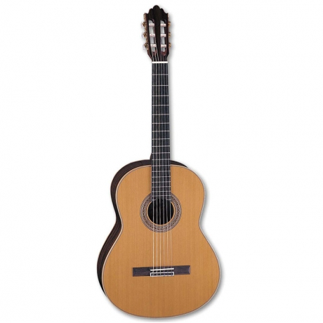
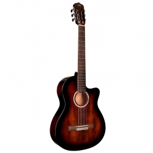
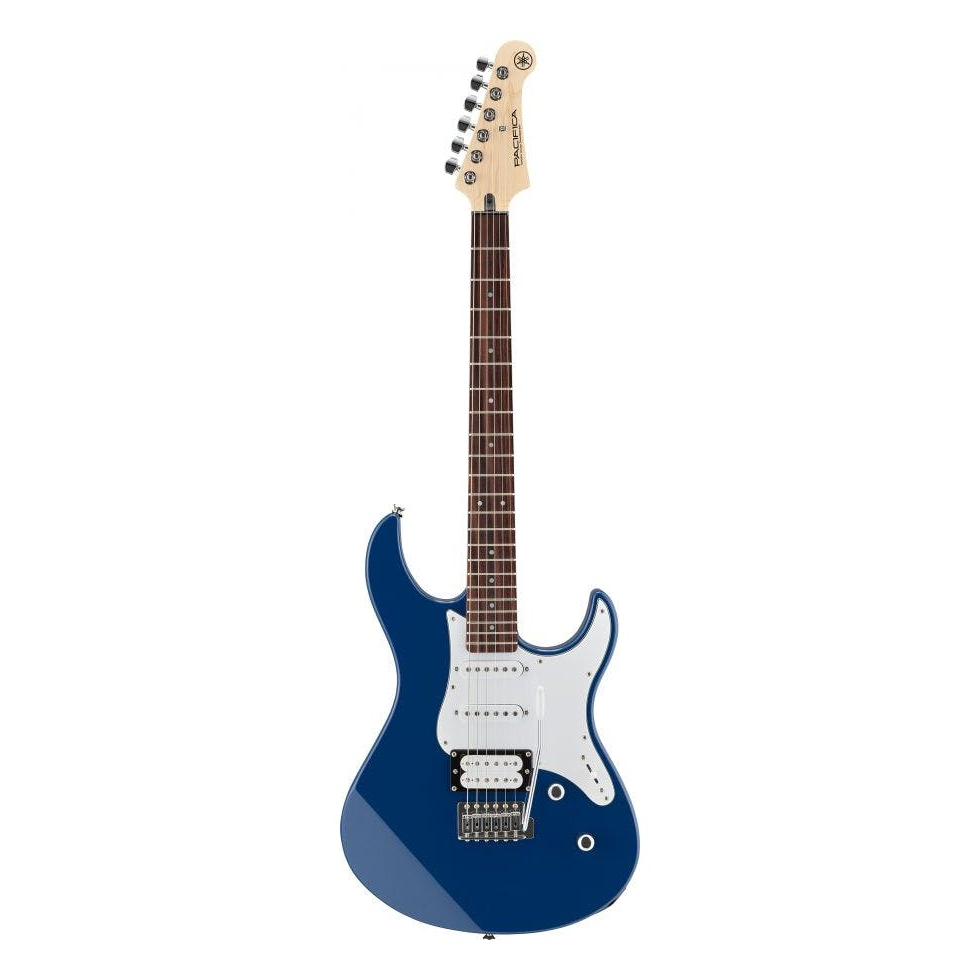
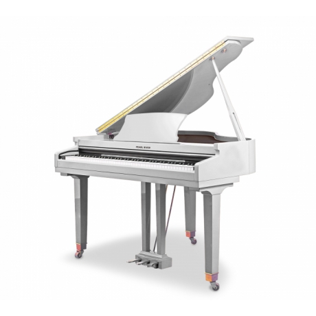
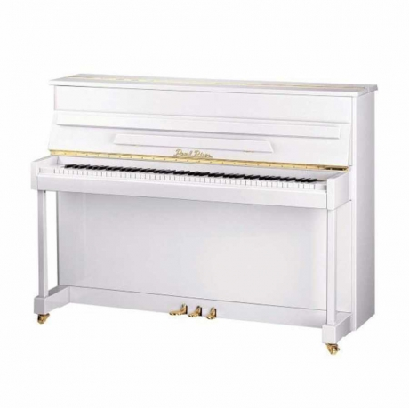
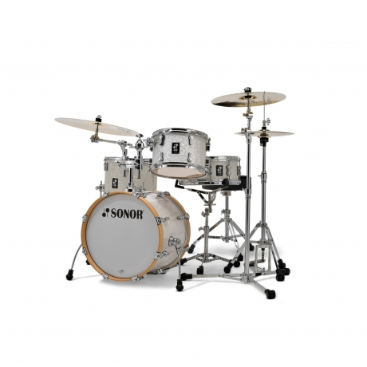
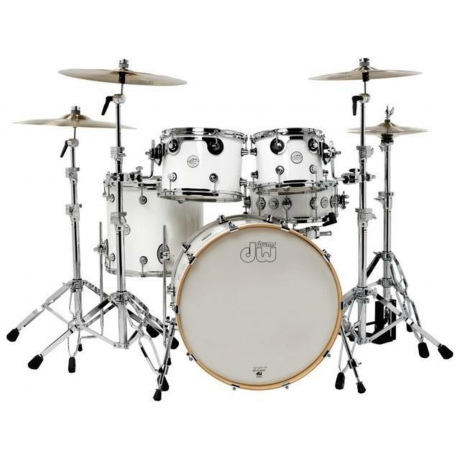
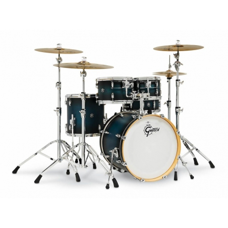
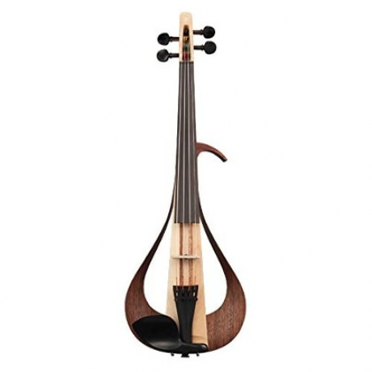
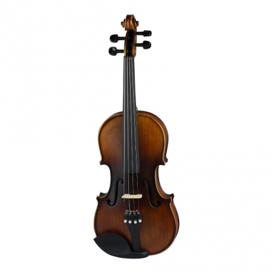

1. Fenix FX-CG811BK 3/4 Klasik Gitar (Siyah)

2. Samick CN-5/N Klasik Gitar (Natural)
3. Cordoba 5 SNB Elektro Klasik Gitar (Sunburst)
4. Yamaha Pacifica 112V IN Elektro Gitar (United Blue)
5. Yamaha CLP765GP Dijital Kuyruklu Piyano (Parlak Siyah)

6. Pearl River GP1100 Baby Grand Dijital Piyano (Beyaz)
7. Pearl River UM115 M5 Silent Akustik Duvar Piyanosu (Parlak Beyaz)
8. Sonor AQ2 Bop Set WHP Akustik Davul (White Pearl)
9. Dw Drums Design Serisi 5 Parça Akustik Davul (Gloss White)
10. Gretsch Renown 5 Parça Akustik Davul (Gloss Antique Blue Burst)
11. Presto Luthier HDV11 Keman (3/4)

12. Yamaha YEV104NT Elektro Keman (Natural)
13. Rösler VLA-9 Keman (1/2)
14. Ashton AV342P Keman (3/4)